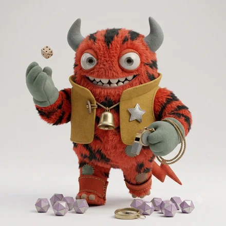
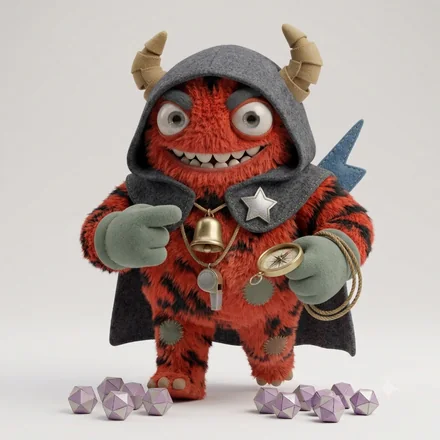
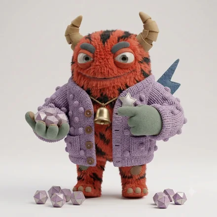
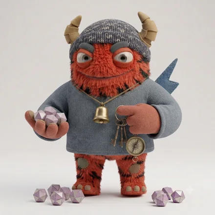
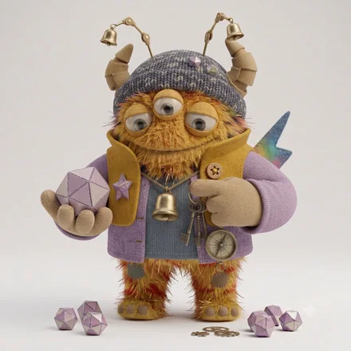
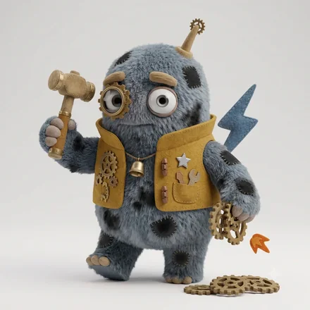
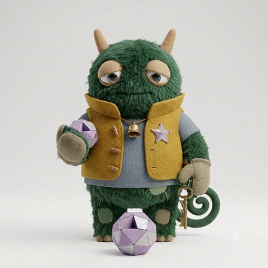

monster type
ESTP-A-H
その場で判断し、まず動く人
状況を素早く読み、最短で結果を取りにいきます。準備より本番に強く、緊張感のある場面で真価を発揮します。退屈と長い会議が最大の敵です。
決断の速さに愛嬌が加わったタイプ。場を沸かせながら成果を取りにいき、交渉ごとで抜群の強さを見せます。

ESTP-A-C冷静な瞬発モンスター
ESTP-O-H考えてから跳ぶ瞬発モンスター
ESTP-O-C読み切る瞬発モンスター同じ基本タイプでも、決断のリズム（A / O）と対人の温度（H / C）で現れ方が変わります。
強み
気をつけたいところ
力を発揮する環境
動きが速く、成果がすぐ返ってくる環境
向いている役割
営業、交渉、現場指揮、危機対応
営業・現場指揮の花形。長期の影響も一度検討する癖が効く。
かみ合う相手
見ている世界が補い合う組み合わせ。対人の温度が同じなので距離が縮まりやすく、決断のリズムが違うぶん、速さと慎重さを互いに預けられます。
安心できる相手

ESFP-A-H太陽のようなお祭りモンスター
ISTP-A-H人懐こい手さばきモンスター
ESTJ-A-H面倒見のいい仕切りモンスターテンポも間合いも近く、説明のいらない関係になりやすい相手。長く一緒にいても疲れにくい組み合わせです。
刺激をくれる相手
価値観の置き所が違うため摩擦は起きますが、自分に足りない視点を最も速く手渡してくれる相手です。
相手のコードがわかれば、2人の相性をこの場で見られます。
この人との相性を調べるこの診断は、回答時点での自己認識を6つの軸で整理したものです。人の性格は状況や時期によって変わります。
© 2026 WONDER BROTHERS INC. All rights reserved.